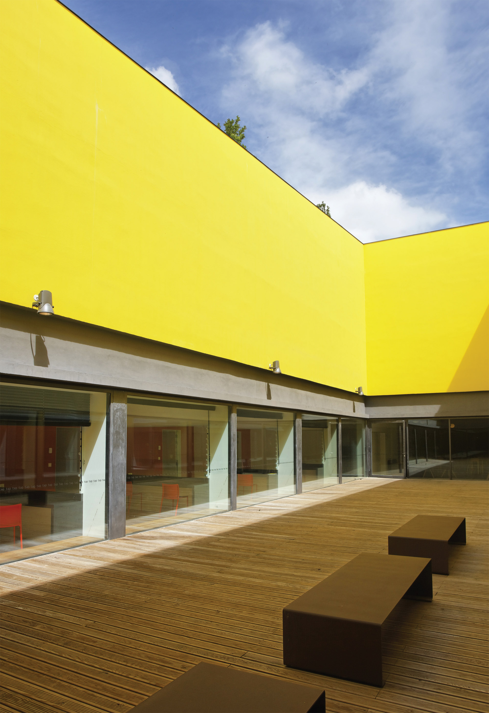
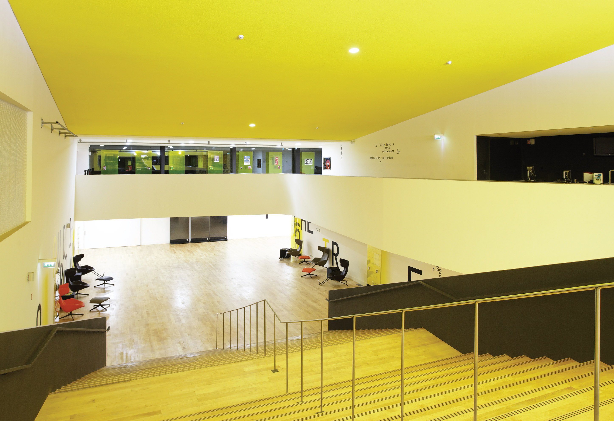
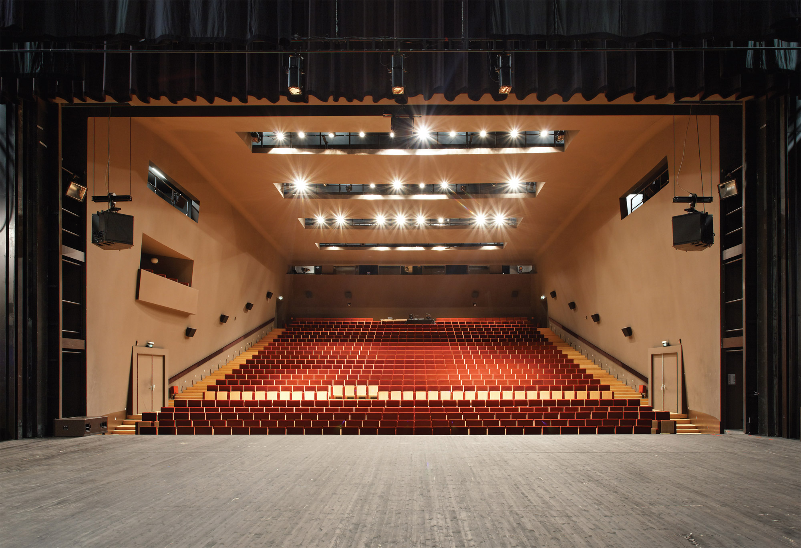

Installé au bord du plateau de la ville ancienne, le TAP domine la vallée. Sa modernité installe un lien entre la ville basse et sa gare TGV et la ville haute, historique.
La conception est simple : un socle épais, habité par les locaux de service et le parking, assure la continuité du mur de soutènement qui longe la rue montante. Sur ce socle, les deux boîtes de verre expriment la présence des deux entités : le théâtre et l’auditorium. Les deux volumes sont complétés par des locaux de service, trois salles de répétitions pouvant servir de lieux de spectacles et un studio d’enregistrement. Les loges s’ouvrent sur un patio creusé dans le socle. La livraison des décors se fait par une salle souterraine pouvant accueillir d’importants poids lourds.
Quelques chiffres

Places
Auditorium
1 020 places
Théâtre
722 places
Architectes
Joao Luis
Hervé Beaudouin
Benoit Engel

Surface
16000 m2

Date
Date de commande
2001
Date de début/fin
2004/2008
Coût
Montant des travaux
45 M € HT
